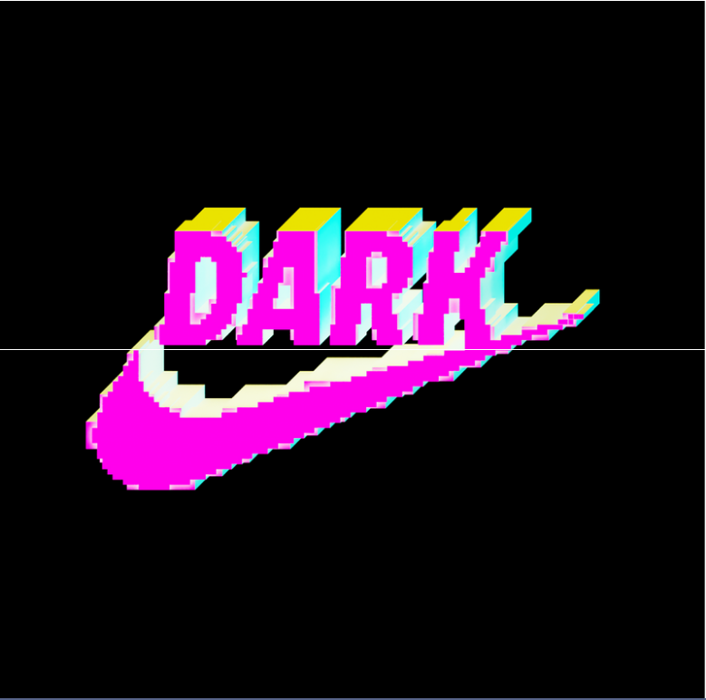
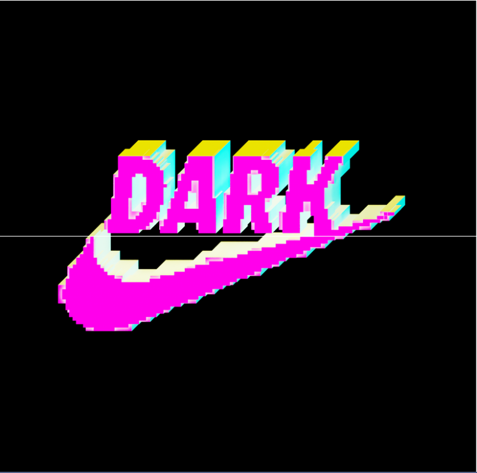
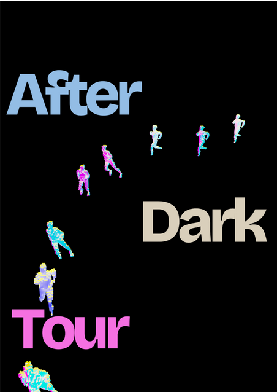
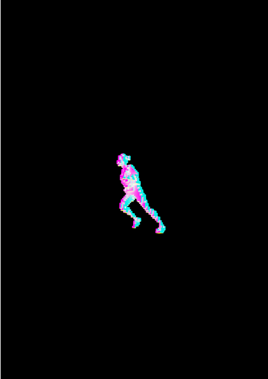
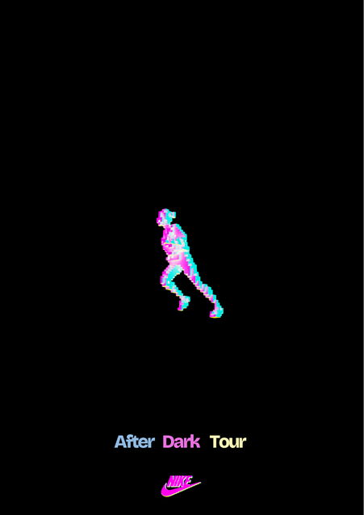
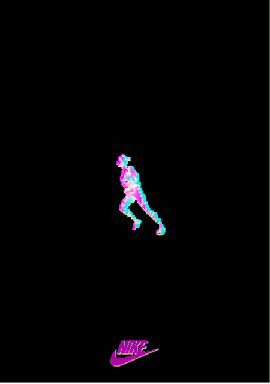
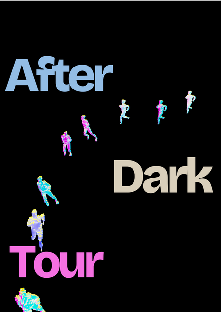
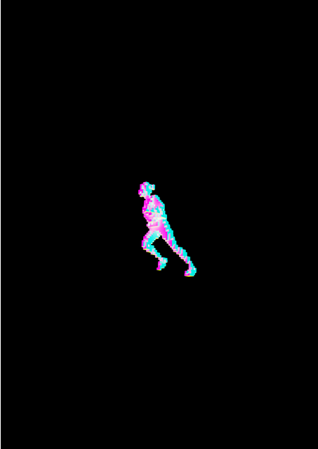
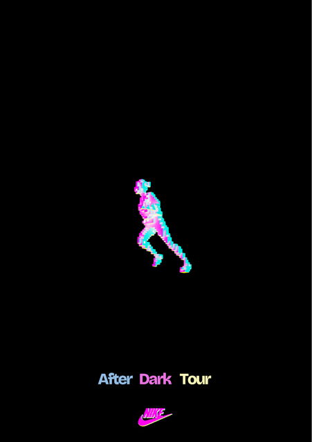
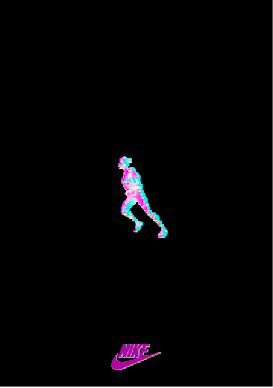

Nike After Dark Tour
Dynamische Identiteit voor Nike
Een dynamische merkidentiteit voor Nike's After Dark Tour - een serie van nachtelijke loopevenementen die de zichtbaarheid van vrouwen in hardlopen bevordert, met events in zes wereldsteden: Sydney, Shanghai, Seoul, Mumbai, Los Angeles en Mexico City.
Concept
De identiteit draait om het thema van zichtbaarheid, vertaald in abstracte 3D-elementen die universeel aanspreken. Het doel is niet alleen vrouwen aan te spreken, maar een breder bewustzijn te creëren rond de zichtbaarheid van vrouwen in de loopsport. Door gebruik van neutrale, abstracte vormen en kleuren wordt een inclusieve boodschap gecreëerd die alle doelgroepen aanspreekt.
Resultaten
- Abstracte 3D-elementen die spelen met zichtbaarheid
- Universeel kleurenpalet dat genderneutraal is
- Dynamische vormen die beweging suggereren
- Vloeiende overgangen tussen zichtbaar en onzichtbaar
Een Levende Identiteit
Nike's After Dark Tour is een dynamische identiteit die constant in beweging is - net als de lopers die het vertegenwoordigt. Het event vindt plaats in zes wereldsteden: Sydney, Shanghai, Seoul, Mumbai, Los Angeles en Mexico City, waarbij de identiteit zich aanpast aan elke locatie terwijl het kernconcept behouden blijft.
Dynamisch Concept
De kern van deze identiteit is constante beweging en transformatie. Door middel van 3D-technieken creëren we een visuele taal die voortdurend evolueert - van logo tot typografie, van product tot omgeving. Elk element is ontworpen om te transformeren, waarbij zichtbaarheid en beweging centraal staan.
Adaptieve Visuele Systeem
Runner outfits en mockups straat
Social media

 

Stylesheet
- Constant evoluerende 3D-vormen die reageren op context
- Dynamisch kleurenpalet dat transformeert tussen tinten
- Responsieve typografie die meebeweegt met de omgeving
- Interactieve elementen die reageren op beweging
Experimenten
Hieronder staan alle foto- en mockup-assets die deel uitmaken van het project. Elke afbeelding illustreert een facet van de dynamische identiteit — experiments, logo-varianten, stedelijke toepassingen en social visuals. De samenhang tussen deze beelden benadrukt dat dit systeem levend is en continu transformeert.

 







Dynamisch Systeem
Het style guide systeem is geen statisch document maar een levend framework dat laat zien hoe de identiteit zich aanpast en evolueert over verschillende media en contexten.